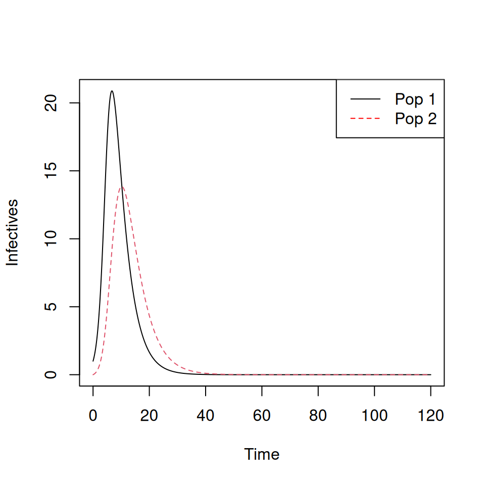
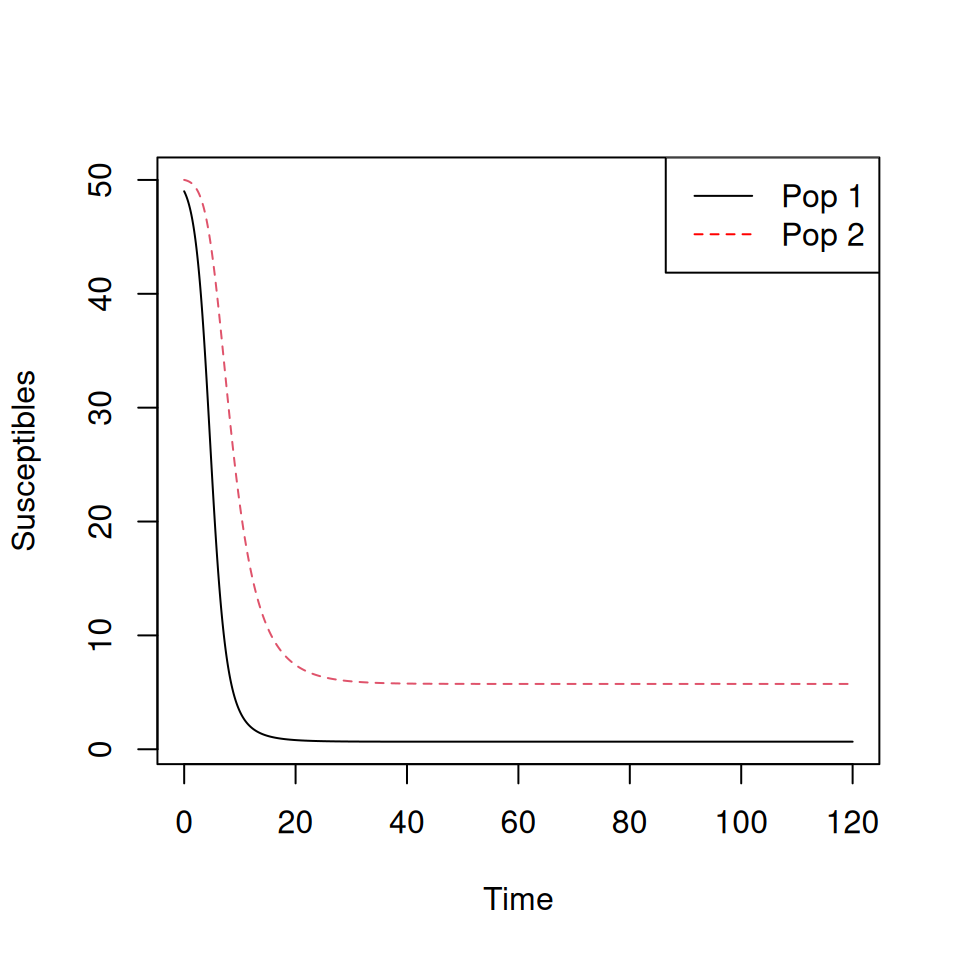

7 Epidemic models—Practical 2
Andrew Conlan (ajkc2@cam.ac.uk), Sophie Ip, Ellen Brooks Pollock (ellen.brooks-pollock@bristol.ac.uk)
7.1 Outline
In this practical we will:
- Code and run a model with vaccination.
- Investigate the critical vaccination threshold.
- Code and run a two-population model and investigate targeted vaccination.
7.2 Vaccination at birth
Consider a vaccine that confers complete protection against infection for life that is administered at birth. You will need to adapt your SIR model from practical 1 to include births, deaths and a permanent vaccination campaign where a proportion \(p \leq 1\) of all newborns are immunized.
7.3 Targeted Vaccination
Now we will consider vaccination in a population with two age groups. We assume that the epidemic dynamics are much faster than demographic changes, so the impact of births and deaths is negligible. Firstly, code up a two-population model. You can base it on the code from the earlier SIR practical.
# This proposed version uses some helpful features of the R language to simplify the code:
# "with" allows us to bring named members of a vector into the local namespace
# here we use to avoid having to specifically rename the elements of par
# We use the matrix/vector functionality to avoid writing down individual equations for
# each group. We don't need to do this it would just be longer to write out each equation in
# turn. You should try this as an excercise and check your new function gives the same dynamics!
TwoPopSIR <- function(t,states,par) {
with(as.list(c(states, par)), {
pops<-matrix(states[1:(npops*nstates)],
nrow=nstates,ncol=npops,byrow=T)
S=pops[1,]
I=pops[2,]
R=pops[3,]
N=colSums(pops)
newinfections = colSums(beta*(I/N) %*% t(S))
dS <- -newinfections
dI <- newinfections - gamma*I
dR <- gamma*I
return(list(c(dS,dI,dR)))
})
}Run the model with initial conditions init <- c(49,50,1,0,0,0) and parameters \(\gamma = \frac{1}{4}\) and \(\beta = \left( \begin{matrix} 1 & 0.1 \\ 0.1 & 0.5 \end{matrix} \right)\).
# states are recorded in order (S1,S2,I1,I2,R1,R2)
# so we have 1 infected in patch 1 for initial condition, 50 individuals in both patches
TwoPop.init<-c(49,50,1,0,0,0)
# Note we have been lazy here and have written the function
# to use the "beta" matrix from the global workspace. This is bad programming form
# but again avoids messing about converting the matrix to and from vectors...
beta = matrix(c(1,0.1,0.1,0.5),2,2)
# As transmission parameters coded in beta above, one other parameter (named for use with with above). Also need number of states and patches (npops) to convert between vector/matrix
TwoPop.par<-c(gamma=1/4.0,nstates=3,npops=2)
TwoPop.t<-seq(0,120,0.1)
TwoPop.sol <- lsoda(TwoPop.init,TwoPop.t,TwoPopSIR,TwoPop.par)
matplot(TwoPop.sol[,1],TwoPop.sol[,c(4,5)],type='l',xlab='Time',ylab='Infectives')
legend('topright',c('Pop 1','Pop 2'),col=c('black','red'),lty=c(1,2))
matplot(TwoPop.sol[,1],TwoPop.sol[,c(2,3)],type='l',xlab='Time',ylab='Susceptibles')
legend('topright',c('Pop 1','Pop 2'),col=c('black','red'),lty=c(1,2))
Note that the epidemic peak occurs later, and is lower, for group 2.
Let’s assume that a proportion \(p_1\) of group 1 and a proportion \(p_2\) of group 2 are vaccinated at the start of the model. The initial conditions are: